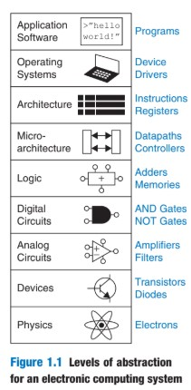
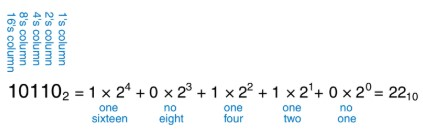
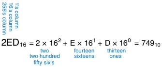
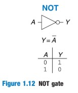
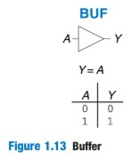
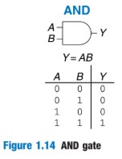
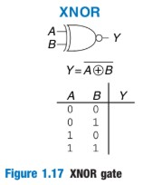
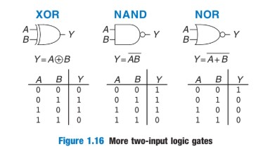
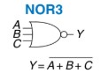
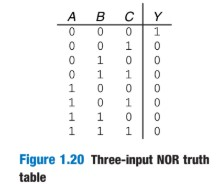

E85: Reading 1
Section 1.1 - 1.5
tl;dr version
May 24, 2020
Section 1.1: The Game Plan
This class will be about microprocessors. You may think, “who cares about microprocessors. Microprocessors are an essential modern engineering tool that represent a $300+ billion industry and has allowed for vast progress in medicine, the internet, and war. *You will learn how to build a microprocessor.*
The plan for the text is as follows:
- Begin with digital logic gates (1s and 0s go in, 1s and 0s go out).
- Combine these logic gates into complex structures such as memory or adders.
- Learn how to program in assembly language to “speak” to the system.
- Put together these building blocks into a microprocessor running assembly code.
Section 1.2: The Art of Managing Complexity
We need to have tools to help us manage the complexity of this difficult path the main way that we can do this through what engineering call *abstraction*.
!!! NOTE: Abstraction
The choice in design to hide details when they are not important.
**i.e:** The world can be abstracted into cities, counties, states, and countries. The best choice depends on what one seeks to accomplish.

A part of abstraction is *discipline*, which entails restricting design choices so that they may function at higher levels of abstraction. For this course, the best example is between digital and analog circuits. In analog we have a continuous choice in voltages. **In digital design we have the discipline to limit ourselves to digital, discrete voltage circuits.**
Digital designers follow the "three-ys":
1. *Hierarchy*: dividing a system into smaller modules until they are easy to understand.
2. *Modularity*: ensure each module has a well-defined function so that it can fit with others without any unanticipated side effects.
3. *Regularity*: create uniformity in the modules so common ones may be reused rather than have to design new ones.
Section 1.3: Digital Abstraction
Using digital abstraction, we limit our design to *Boolean logic*. This means that the circuits of interest can be TRUE or FALSE, HIGH or LOW, 1 or 0. We can use this abstraction to represent all types of information - rotating gears, hydraulic fluids, etc. without ever going beyond 1s and 0s.
!!! NOTE: Amount of information
The amount of information **D** in a discrete valued variable with **N** states is given by:
$$ D = \log_2 N $$
Section 1.4: Number Systems
In digital systems, the most common number systems are *binary, octal, decimal,* and *hexadecimal.*
- Binary: Base 2
- Octal: Base 8
- Decimal: Base 10
- Hexadecimal: Base 16
This section is devoted to demonstrating how to fluidly move between these numbering systems.
**Binery to Decimal:**

**Decimal to Binary:**
1. Work from the left, using the largest power of 2 less than or equal to the number
2. Substract this power of 2 from the number and proceed to the next lowest power of 2
3. If subtraction is possible, write a 1. If it is not possible, proceed and write a 0.
4. Proceed until $ 2^0 $
Example: $ 84_{10} = 1010100_{2} $
**Hexadecimal to Binary**
This conversion is very easy, each hexadecimal digit corresponds to 4 binary digits. Each can be converted individually and the result concatenated together.
$ 2_{16} = 0010_{2} $
$ E_{16} = 1110_{2} $
$ D_{16} = 1101_{2} $
$ 2ED_{16} = 0010 1110 1101_{2} $
**Binary to Hexadecimal**
Another easy conversion. Read the binary from the right in groups of 4 and convert each group of 4 to hexadecimal.
$ 1010_{2} = A_{16} $
$ 111_{2} = 0111_{2} = 7_{16} $
$ 1111010_{2} = 7A_{16} $
**Hexadecimal to Decimal**

**Other Conversions**
Other conversions are completed in the same manner. For example, decimal to hexadecimal is the same as decimal to binary, except subtracting bases of 16 instead of bases of 2.
A special case is octal, which follows the same relation to binary as hexadecimal except instead of each octal number representing 4 bits, it represents 3.
!!! NOTE: Some Syntax
A group of 8 bits is called a ***byte*** and has $ 2^{8} $ possibilities. Half a byte, or 4 bits is called a ***nibble***. Microprocessors tend to handle data in ***words***, whose size depends on the architecture. 64-bit processors with 64-bit word length are common in modern computing. Within a group of bits, the bit in the ones place is called the ***least significant bit (lsb)*** while the bit on the other side is called the ***most significant bit (msb).***
**Binary Addition**
Binary addition is identical to decimal addition, except the max capacity for a place is 1. Therefore, 1 + 1 = 0 at any place holder and a value of 1 is carried.
!!! ERROR: Overflow
An important caveat is ***overflow***. Usually digital systems have a fixed number of digits. A 4-bit number has range [0,15], binary addition greater than 15 will ***overflow***, discarding the ***msb*** and giving an incorrect result. You can check for a carry out in the most significant column.
**Signed Binary Numbers**
There are two ways to give our numbers sign:
- *Sign/Magnitude*
- The most significant bit represents the sign, with a sign of 0 as positive and 1 as negative. The remaining bits give magnitude. Note that this means that *there are two zeros, +0 and -0*. This can be quite troublesome.
- The range of an N-bit sign magnitude number is **$ [ -2^{N-1} + 1 $ to $ 2^{N-1} - 1 ] $**
- *Two's Complement*
- Identical to unsigned, except that the most significant bit has a weight of $ -2^{N-1} $ instead of $ 2^{N-1} $.
- The range is $ 10...00_{2} = -2^{N-1} $ to $ 01...11_{2} = 2^{N-1} - 1 $
!!! NOTE: Two's Complement of Decimal Number
To find the representation of $ -2_{10} $ we:
- Recognize $ 2_{10} = 0010_{2} $
- Invert all of the bits: $ 1101_{2} $
- Add 1: $ 1101_{2} + 1 = 1110_{2} $
- **SOLUTION:** $ -2_{10} = 1110_{2} $
!!! NOTE: Value of a Two's Complement Number
$ 1001_{2} $ has a **leading 1** therefore it must be negative.
- Invert all of the bits: $ 0110_{2} $
- Add 1: $ 0111_{2} $
- Convert to decimal, **remember sign**: $ 0111_{2} = 7_{10} $
Adding two's complement numbers is identical to adding binery numbers. In the case of overflow, discard the overflowing most significant bit. *(Pg. 17 for example)* Remember that substraction is the same as adding a negative number.
!!! ERROR: subtleties
We know that there is an **overflow** if two numbers with the same sign bit add and the result has the opposite sign bit. If you we must extend the number of bits be sure to copy the sign bit **on to all the extending bits**. For example, $ 1101_{2} = -3 $. Extending to 6 bits means: $ 111101_{2} = -3 $
Section 1.5: Logic Gates
**Logic Gates** are digital circuits that take one or more binary inputs and produce a binary output. One way to understand a logic gate is through its **truth table**, which shows the output for all possible inputs.
Pictures and truthtables for all the major 1-input and 2 input logic gates are below. Note that the bubble on NAND and NOR represents a NOT gate.





***Multiple Input Gates***
It is common to use gates with multiple inputs. These follow the same rules as the two input gates but applied to more inputs. For example, a three input AND gate requires all three 1 inputs to output a 1. Example three input NOR gate and truth table is below.

